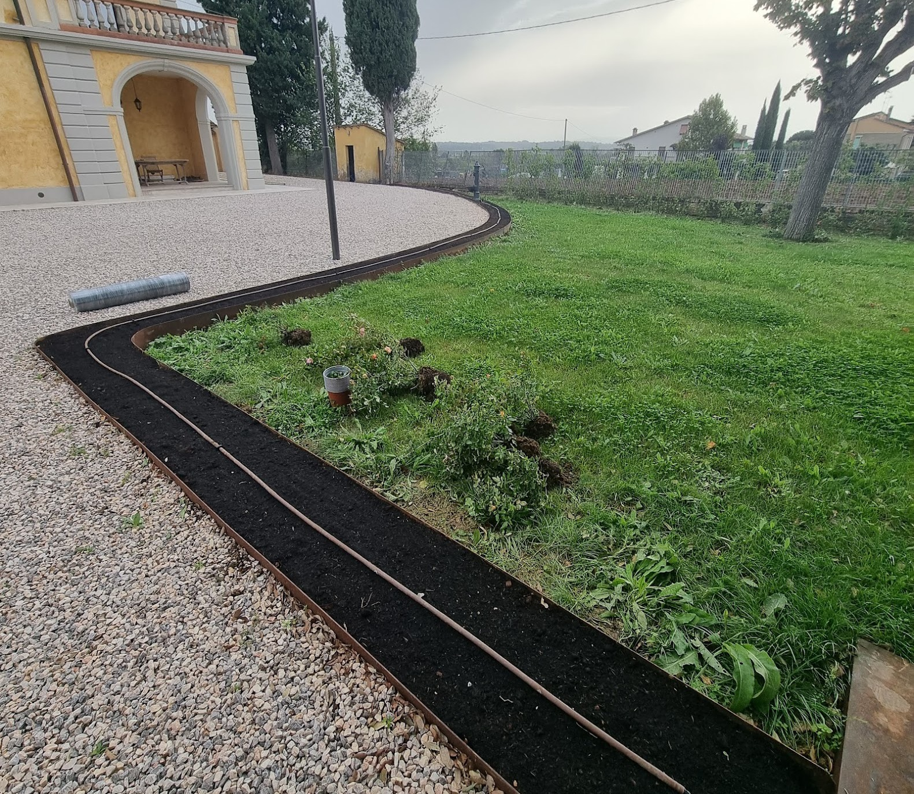
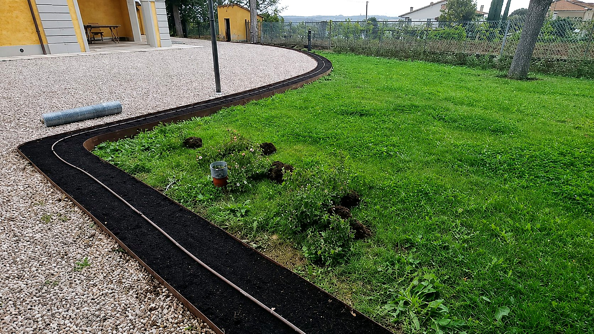
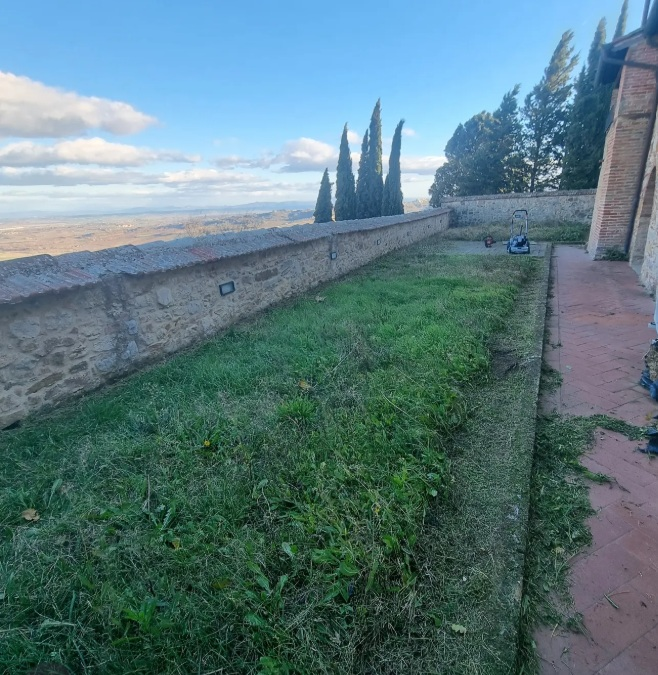

Esperienza, studio e cura del dettaglio.
Che prato può reggere quel giardino
Prima di scegliere fra semina e rotoli si decide che prato può reggere quel giardino. È la scelta che pesa di più, e si fa guardando tre cose.
La luce. Un prato in ombra per buona parte della giornata non diventa fitto con più acqua o più concime: servono specie che tollerano l'ombra, e anche quelle danno un tappeto meno denso. Dove l'ombra è profonda conviene sapere prima che il prato non è la risposta.
L'uso. Un prato calpestato da bambini o da un cane chiede specie resistenti e a ricaccio rapido, che si riprendono dai vuoti. Un prato solo da guardare può permettersi miscugli più fini e più delicati.
L'acqua che si è disposti a dare. È il punto su cui si mente più volentieri in fase di progetto. Un tappeto verde uniforme in piena estate ha un costo idrico, e va deciso in partenza se quel costo si vuole sostenere o se conviene un prato che accetta di ingiallire e riprendersi.
Quando il prato fa parte di un giardino da realizzare o da rifare per intero, queste tre cose si decidono insieme a tutto il resto.

Semina o rotoli
Nessuna delle due è la scelta giusta in assoluto. Cambiano tempi, budget e quanto si può aspettare prima di usare il giardino. Si sceglie in base a quanto si può aspettare prima di usare il giardino, e a quanta acqua si può garantire nelle prime settimane.
Semina
La semina è la strada più economica e la più flessibile: si sceglie il miscuglio esatto per quel giardino, e il prato nasce già adattato al terreno in cui deve vivere. In cambio chiede tempo e disciplina. Il seme va tenuto umido finché non germina, il terreno resta scoperto per settimane ed è in quelle settimane che le infestanti hanno la loro occasione. Il primo taglio arriva quando il prato regge la lama, non quando il calendario lo dice.
- Miscuglio scelto sul giardino
- Terreno scoperto per settimane
- Primo taglio quando il prato regge


Rotoli
I rotoli danno un prato finito in giornata. Coprono subito il terreno, tolgono la finestra in cui le infestanti si insediano e permettono di lavorare fuori dal periodo migliore per la semina. Costano di più, la scelta delle specie è quella disponibile e non quella ideale, e il punto delicato si sposta tutto sulla posa: le zolle vanno stese su un letto preparato fine e messe a contatto pieno col terreno. Dove il contatto manca, la zolla si asciuga e quel tratto non salda.
- Prato finito in giornata
- Specie quelle disponibili
- Tutto si gioca sulla posa
Calendario del prato
La finestra dell'anno
Il periodo non è un dettaglio organizzativo: sposta il risultato più di quasi ogni altra scelta.

Fine estate
Terreno ancora caldo e aria già fresca: è la finestra migliore per seminare.
Autunno
Il prato ha davanti una stagione intera per infittire prima del caldo.
Primavera
Si può, ma si corre contro l'estate: radici corte e dipendenza stretta dall'acqua.
Pieno del caldo
Solo a rotoli, e solo se l'acqua non manca mai nelle prime settimane.
Fuori dalle finestre buone il prato si fa lo stesso, ma il margine di errore si stringe e il costo si sposta sull'irrigazione.
FAQ
Domande sulla realizzazione del prato
Perché un prato nuovo viene a chiazze?
Nella semina le chiazze vengono quasi sempre da come è stato preparato il letto: avvallamenti dove l'acqua si raccoglie, punti più compattati dove il seme non attecchisce, distribuzione non uniforme. In tutti e tre i casi il problema è sotto, non nel seme.
Nei rotoli le chiazze compaiono dove la zolla non ha fatto contatto col terreno, spesso lungo le giunzioni o su una superficie non spianata bene. Si interviene finché il prato è giovane: più si aspetta, più i vuoti si riempiono di quello che arriva da solo.
Quando si può cominciare a camminare su un prato nuovo?
Quando ha radicato abbastanza da reggere la prima rasatura. È il segnale pratico: se il prato non si strappa passando la lama, tiene anche il passaggio leggero.
Prima di quel momento ogni calpestio sposta il seme o scolla la zolla proprio dove serve il contatto. Vale anche per gli animali, che tendono a passare sempre sulla stessa linea e lì il prato non si chiude più.
Un prato a rotoli attecchisce sempre?
No, e chi lo garantisce sta promettendo qualcosa che non dipende solo da lui. La zolla arriva viva ma senza radici nel terreno nuovo: se nelle prime settimane l'acqua manca, o se sotto trova un letto irregolare o compattato, non salda.
Quello che si può fare è togliere le cause di fallimento — preparazione fine, contatto pieno, acqua costante nel periodo critico — e dirlo prima, invece di scoprirlo dopo la posa.